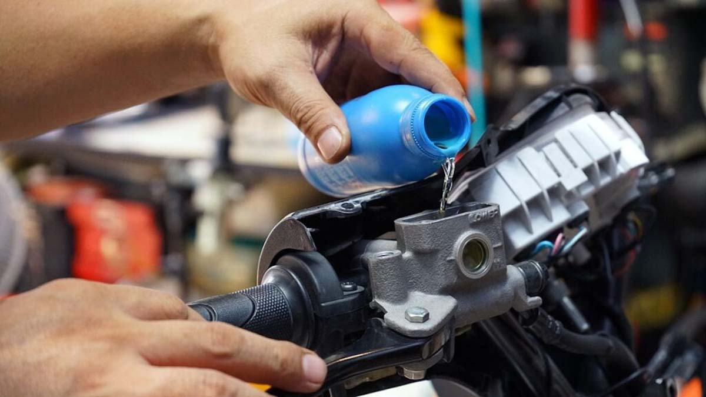

El mantenimiento preventivo es la clave para mantener tu moto siempre
lista, evitar fallas costosas y rodar con seguridad. Aprende a cambiar
el aceite, revisar frenos, tensar la cadena y mucho más con nuestra guía
visual paso a paso.
1. Encender el motor: Enciende el motor durante aproximadamente 1 minuto. Esto permite que el
aceite se caliente un poco, lo que facilita su drenado porque se vuelve más fluido.
2. Drenar el aceite viejo: Apaga el motor y asegúrate de que el vehículo esté bien nivelado y
asegurado. Coloca una bandeja debajo del cárter. Afloja y retira el tornillo de drenado. Deja que todo el aceite
viejo se vacíe completamente.
3. Cambiar el filtro de aceite (si aplica): Usa una llave especial para aflojar el filtro.
Lubrica la empaquetadura del filtro nuevo y colócalo con la mano, sin apretarlo demasiado.
4. Colocar el tornillo de drenado: Una vez drenado todo el aceite, vuelve a colocar el tornillo
y ajústalo firmemente, pero sin excederte.
5. Agregar aceite nuevo: Quita la tapa del depósito de aceite. Con un embudo, vierte lentamente
el aceite nuevo en la cantidad recomendada. Revisa el nivel con la varilla medidora. Ajusta si es necesario y
cierra la tapa.
6. Verificar funcionamiento: Enciende el motor por 1-2 minutos. Revisa fugas en el tornillo y el
filtro. Apaga el motor y vuelve a verificar el nivel de aceite.
Cambio de Filtro de Aire
1. Ubica la caja del filtro de aire: La caja del filtro suele encontrarse debajo del asiento o
del tanque de la motocicleta o vehículo. En algunos modelos, puede estar a un costado. Revisa el manual si tienes
dudas.
2. Abre la tapa de la caja del filtro: Usa las herramientas necesarias (tornillos, clips o
broches, según el modelo). Retira con cuidado la tapa para acceder al filtro.
3. Retira el filtro de aire viejo: Saca el filtro con cuidado para no dejar residuos dentro de
la caja. Observa si está muy sucio, roto o húmedo; esto indicaría que necesita un cambio inmediato.
4. Sustituye o limpia el filtro: Si el filtro es desechable, reemplázalo por uno nuevo del mismo
tipo. Si es reutilizable (como los de espuma o alto rendimiento), límpialo siguiendo las instrucciones del
fabricante. Ejemplo: se puede usar aire comprimido o lavarlo con agua y dejarlo secar completamente.
5. Vuelve a colocar el filtro y cierra la tapa: Asegúrate de que el filtro esté bien asentado en
su lugar. Coloca la tapa de nuevo y ajusta tornillos, broches o clips según el tipo de caja. Verifica que todo
esté bien cerrado para evitar entrada de polvo o suciedad.
Cambio de Filtro de Gasolina
1. Ubicación del filtro: El filtro de gasolina generalmente se encuentra entre el tanque de
combustible y el carburador o sistema de inyección. En autos, puede estar en el compartimento del motor, debajo
del chasis o junto al tanque. En motocicletas, suele estar cerca del carburador o bajo el asiento.
2. Preparativos antes de cambiarlo: Asegúrate de que el motor esté apagado y frío. Desconecta la
batería para evitar cualquier chispa accidental. Coloca un recipiente o trapo debajo del filtro para atrapar
cualquier goteo de gasolina.
3. Cerrar el paso de gasolina: Usa pinzas especiales o abrazaderas para apretar las mangueras
antes y después del filtro. Esto evita que se derrame gasolina al desconectarlo. Algunos vehículos tienen una
válvula de paso en el tanque. Si es tu caso, ciérrala.
4. Retirar el filtro viejo: Afloja las abrazaderas que sujetan el filtro a las mangueras (pueden
ser tipo tornillo o presión). Saca el filtro viejo con cuidado para evitar derrames.
Revisión y Cambio de Líquido de Frenos
¿Qué necesitas?: Llave para la válvula de purga (generalmente 8 mm o 10 mm), manguera
transparente, recipiente para recolectar el líquido usado, líquido de frenos nuevo (DOT 3, 4 o 5.1 según tu
vehículo), y un ayudante (opcional, pero muy útil).
1. Rellenar el depósito: Abre el depósito del líquido de frenos y llénalo con líquido nuevo
hasta el nivel máximo indicado.
2. Ubicar la válvula de purga: Está ubicada en la pinza de freno, cerca del pistón. Coloca una
manguera transparente en la válvula y el otro extremo dentro de un frasco con un poco de líquido, para evitar que
el aire regrese al sistema.
3. Presionar y purgar (método manual): Pide a tu ayudante que bombee la maneta o pedal de freno
varias veces y lo mantenga presionado. Mientras lo hace, abre ligeramente la válvula de purga (1/4 de vuelta).
Saldrá líquido con burbujas. Cierra la válvula antes de que suelte el freno. Repite el proceso hasta que el
líquido salga limpio y sin burbujas.
Importante: No dejes que el depósito se quede sin líquido, ya que entrará aire al sistema y
deberás empezar de nuevo.
4. Repite en las demás ruedas: Si tu vehículo tiene más de un freno (como una moto con freno
delantero y trasero, o un auto), repite el procedimiento en cada pinza de freno.
5. Verifica y cierra: Asegúrate de que el nivel final del líquido esté correcto. Cierra bien el
depósito y limpia cualquier derrame. Prueba los frenos en parado; deben sentirse firmes, no esponjosos.

Cambio de Balatas (Pastillas o Zapatas de Freno)
Herramientas necesarias: Llave para tornillos de la pinza o tambor, pinzas (si es necesario),
cepillo o trapo limpio, lubricante para frenos (opcional, para partes metálicas móviles).
1. Retira la rueda o accede al sistema de freno: En frenos de tambor, normalmente necesitas
quitar la rueda trasera o delantera. En frenos de disco, solo quitas la pinza de freno.
2. Quita las balatas gastadas: En sistemas de tambor como el de la imagen, abre el tambor y
retira con cuidado las zapatas (balatas curvas). Nota: observa bien su posición para colocar las nuevas igual. En
frenos de disco, quita los pasadores o clips y extrae las pastillas desgastadas.
3. Limpieza del sistema: Usa un trapo limpio o cepillo seco para remover polvo, residuos de
balata o suciedad. No uses aire comprimido ni sople directamente, ya que el polvo de freno puede ser dañino.
4. Instala las balatas nuevas: Alinea y coloca las zapatas nuevas en la misma posición que las
antiguas. En frenos de disco, inserta las pastillas nuevas asegurándote de que encajen correctamente y coloca de
nuevo los pasadores o clips para sujetarlas.
5. Vuelve a montar la rueda o pinza: Coloca la rueda en su lugar y ajusta los tornillos
adecuadamente o monta la pinza en frenos de disco, asegurándote de que todo quede bien fijo.
6. Verifica el funcionamiento: Antes de rodar, presiona varias veces la maneta o pedal de freno
para que las balatas se ajusten correctamente y el sistema recupere presión. Asegúrate de que el freno responda
firmemente y sin ruidos extraños.
Cómo ajustar la Tensión de la Cadena Paso a Paso
Herramientas necesarias: Llave para eje trasero, llave para tornillos del tensor de cadena,
regla o calibrador, lubricante para cadena (opcional después del ajuste).
1. Prepara la moto: Coloca la moto en el caballete central o soporte lateral, de modo que la
rueda trasera quede libre para girar (si es posible). Asegúrate de que esté estable y en una superficie plana.
2. Afloja el eje trasero: Con una llave adecuada, afloja la tuerca del eje de la rueda trasera,
pero sin quitarla. Esto permite que la rueda se mueva hacia adelante o hacia atrás para ajustar la tensión.
3. Verifica la holgura actual: En la parte inferior de la cadena (entre piñón y corona),
empújala hacia arriba y hacia abajo. La holgura ideal suele ser de 2 a 3 cm (consulta el manual de tu moto si
quieres el valor exacto). Si está muy floja, se puede salir. Si está muy tensa, puede dañar el kit de arrastre o
el eje.
4. Ajusta con los tornillos tensores: Usa la llave para girar los tornillos tensores ubicados en
ambos lados del eje trasero. Ajusta ambos lados por igual para centrar la rueda y conseguir la holgura
recomendada.
5. Aprieta el eje trasero: Una vez que la cadena tenga la tensión correcta y la rueda esté
centrada, aprieta bien la tuerca del eje trasero para asegurarla.
6. Lubrica la cadena: (Opcional) Después del ajuste, aplica lubricante para cadena en los
eslabones para prolongar su vida útil y mejorar el funcionamiento.
Lubricación de Cadena Paso a Paso
Lubricar la cadena regularmente mejora el rendimiento, reduce el desgaste y alarga la vida útil del kit
de arrastre (cadena, piñón y corona).
¿Qué necesitas? Limpiador de cadenas o desengrasante (puede ser WD-40, keroseno o producto
especializado), cepillo para cadena (tipo “gr” o de dientes suaves), lubricante para cadena de moto (en aerosol o
líquido, idealmente tipo “O-ring safe”), trapo limpio.
1. Limpieza previa (si la cadena está sucia): Recomendado hacerlo con la cadena tibia, después
de una pequeña rodada. Coloca la moto en caballetes o soporte para que la rueda trasera pueda girar libremente.
Rocía desengrasante sobre la cadena, cubriendo todos los eslabones. Usa un cepillo para frotar y remover la
suciedad, especialmente entre los eslabones y alrededor de los retenes. Enjuaga (si el producto lo permite) y
sécala completamente con un trapo antes de aplicar lubricante.
2. Aplicación del lubricante: Gira la rueda con la mano lentamente mientras aplicas el
lubricante en los eslabones internos de la cadena, asegurándote de cubrir toda su longitud. Aplica con moderación
para evitar exceso que pueda atraer suciedad.
3. Limpieza del exceso: Usa un trapo limpio para retirar cualquier exceso de lubricante de la
cadena y partes cercanas, evitando manchas en la rueda o frenos.
4. Frecuencia recomendada: Realiza esta lubricación cada 500 a 800 km o después de rodar bajo
lluvia para mantener la cadena en óptimas condiciones.
Video Tutorial
Aquí te dejo un video que explica cómo hacerle mantenimiento a tu moto